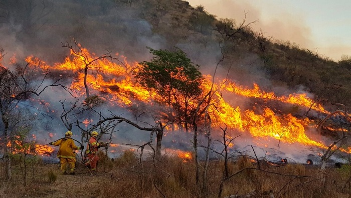
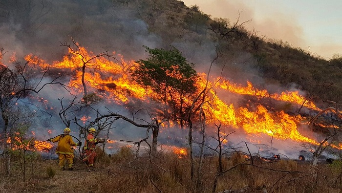

Seamos prudentes, cuidemos el medio ambiente.
¿Sabias que el 95% de los incendios forestales son producidos por la mano del hombre? Los incendios forestales son fuegos descontrolados de rápida propagación que afectan a bosques, llanuras, pastizales, pasturas, entre otras. Te dejamos algunas recomendaciones oficiales para prevenirlos.

Evita fumar y arrojar fósforos, colillas o botellas rotas en el suelo ya que pueden ser un medio para generar fuego por la intensidad del sol.
Si realizás una fogata, colocá piedras alrededor del fuego y, luego de apagarlo con agua o tierra, asegurate de haberlo hecho correctamente removiendo las cenizas.
Evitá encender fuego en época de sequía.
Si estás en una ruta y ves un incendio forestal, avisá de inmediato a los bomberos. Recordá que una columna de humo significa la posibilidad de un incendio forestal.
Si vivis en una zona con riesgo de incendios forestales:
 

 No apiles troncos ni ramas cerca de la casa. Mantené el pasto corto y construí una línea de defensa de al menos 3 metros de ancho sin vegetación alrededor de la vivienda.
No apiles troncos ni ramas cerca de la casa. Mantené el pasto corto y construí una línea de defensa de al menos 3 metros de ancho sin vegetación alrededor de la vivienda.Mantené los techos, canaletas y desagües libres de hojas, ramas y pinocha, ya que en un incendio es material combustible que alimenta al fuego.
Si tenes pileta, mantenela con agua durante todo el año, ya que puede ser utilizada por los bomberos para controlar el avance del fuego.
Si contás con tubos de gas o un depósito de gas butano (Zeppelin), es muy importante que te asesores sobre las normas de seguridad apropiadas.
Si tenes depósitos con combustibles líquidos (nafta, gasoil), asegurate de que se encuentren en lugares libres de basura o leña y lejos de la exposición solar. Colocá cartelería informativa y a la vista.
Es recomendable usar rejillas matachispas en los escapes de los vehículos para circular por el monte.
Inundaciones, causas y prevencion.
Causas:
Actividades humanas como la tala de árboles o la impermeabilización de suelos por la construcción de rutas y viviendas, etc. Sin respetar el entorno ni naturaleza, generando mayor contamienacion en la zona.
Lluvias intensas durante un periodo corto de tiempo en donde se supera la capacidad del suelo de absorber y los ríos empiezan a subir.
A causa de fuertes vientos que a veces pueden provocar la crecida de los ríos.
Por deshielo.
Por rompimiento o desborde de represas.
¿Qué hacer en caso de lluvias intensas?
Conservá la calma.
Cerrá la llave de gas, agua y cortá la electricidad.
Evacuá hacia una zona segura, que por lo general son las más altas.
Si te sorprende el agua dentro de la vivienda, evitá sótanos y planta baja. Llamá a los Bomberos para que te ayuden a evacuar.
Mantené cerradas puertas y ventanas, para evitar corrientes de agua dentro de la vivienda.
No usés ningún tipo de vehículo como auto, moto o bicicleta.
No ubicarse cerca de postes de electricidad o cables.
Si hay heridos, llamá a las autoridades. No intentés moverlos.
Informá a las autoridades si hay alguien que tenga movilidad reducida o no pueda evacuarse por sus propios medios.
Prestá atención solo a los avisos de las autoridades a cargo.
No intentés caminar o nadar por caminos inundados o cauces de río.
Señalizá en caso que la casa tenga pozo negro, por las dudas que este se derrumbe.
Bebé agua potabilizada, no utilicés el agua de la canilla.
Tené siempre cerca una radio a pilas (tené pilas de repuesto) conocé lo que está sucediendo.
 Zonas en alerta
Zonas en alerta